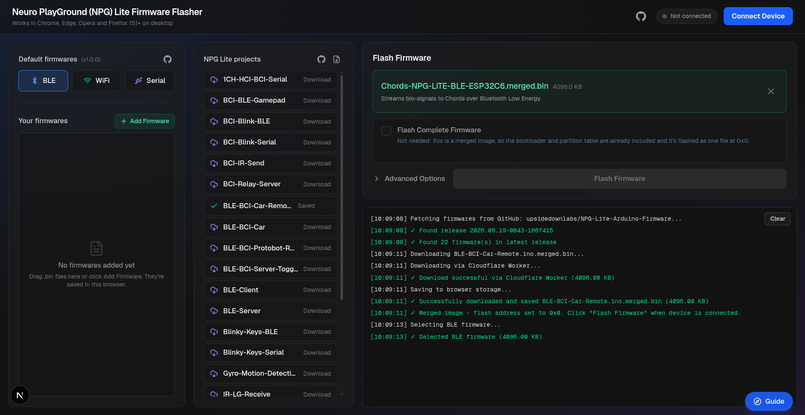

NPG Lite Flasher Web#
Overview#
NPG Lite Flasher Web is an open-source, browser-based tool to flash firmware onto the Neuro PlayGround (NPG) Lite and other ESP32-based boards. There is nothing to install - open upsidedownlabs.github.io/NPG-Lite-Flasher-Web, connect your board with a USB cable, choose a firmware and click Flash Firmware.

NPG Lite Flasher Web Landing Page#
Features#
Feature |
Description |
|---|---|
No Installation |
Runs fully in your browser using the Web Serial API. You don’t need the Arduino IDE or any desktop app. |
Default Firmwares |
Flash the BLE (wireless), WiFi or Serial (direct USB) build of Chords with one click. They are always taken from the latest release. |
NPG Lite Projects |
Every project from the latest NPG-Lite-Arduino-Firmware release, each with a short description. Download one, or all of them at once. |
Your Own Firmware |
Add any |
Saved in the Browser |
Downloaded and added firmwares are saved in your browser, so they’re ready the next time you open the flasher. |
Automatic Flash Address |
Merged images are flashed at |
Flash Complete Firmware |
Write the bootloader, partition table and app together, for a blank chip or a new partition scheme. |
Console & Progress |
See live logs and the flashing progress while the firmware is uploaded. |
Guided Tour |
Click Guide to get a step-by-step tour of the page. |
NPG Lite Flasher Web or NPG Lite Flasher?#
Both tools upload firmware to the NPG Lite. Use whichever is easier for you:
NPG Lite Flasher Web |
||
|---|---|---|
Runs in |
Your browser |
Desktop app (Windows, macOS, Linux) |
Installation |
Not needed |
Download and install |
Browser needed |
Chrome, Edge, Opera or Firefox 151+ |
Not needed (it is a desktop app) |
Best for |
Quick flashing on any computer |
Offline use, or when you don’t have a supported browser |
Requirements#
Browser#
NPG Lite Flasher Web uses the Web Serial API, which works in the latest versions of these desktop browsers:
Google Chrome
Microsoft Edge
Opera
Mozilla Firefox (version 151 or later)
Safari and mobile browsers are not supported.
Note
NPG Lite Flasher Web only needs Web Serial, so it works fully in Firefox 151 or later (the first version with Web Serial). Firefox doesn’t support Web Bluetooth or WebUSB, but the flasher doesn’t use them.
Hardware#
Neuro PlayGround (NPG) Lite or any ESP32 board.
A USB Type-C data cable (not a charge-only cable).
Setting up the Hardware#
Turn ON the NPG Lite using the power switch on the side of the board.
Connect the NPG Lite to your laptop using the USB Type-C cable.
Uploading the Firmware#
Use this to flash the standard BLE, WiFi or Serial firmware.
Open NPG Lite Flasher Web in a supported browser.
Click Connect Device, select your NPG Lite’s port from the list and click Connect. The console shows the chip it connected to (for example,
Connected to ESP32-C6).Under Default firmwares, select the firmware you need:
BLE (Wireless): to stream data over Bluetooth, for example to Chords-Web.
WiFi (Wireless): to stream data over Wi-Fi.
Serial (Direct USB): to stream data over the USB cable.
Check the selected firmware’s name and size under Flash Firmware.
Click Flash Firmware and wait until it reaches 100%. Don’t unplug the board while flashing.
When the console shows Flash completed successfully!, the board restarts with the new firmware.
Note
The default firmwares are downloaded from the latest Chords-Arduino-Firmware release, so you always get the newest version.
Use this to flash one of the ready-made NPG Lite projects.
Open NPG Lite Flasher Web and click Connect Device.
The NPG Lite projects list shows every project from the latest NPG-Lite-Arduino-Firmware release, with a short description of what it does.
Click a project to download and select it. It is saved in your browser, so you don’t need to download it again.
Tip
Click the download-all icon next to NPG Lite projects to save every project at once.
Click Flash Firmware and wait until the console shows Flash completed successfully!.
Note
If a download fails, the console shows a link to the release. Download the .merged.bin file from there and add it using the Your Own Firmware steps.
Use this to flash a .bin file you compiled yourself.
Open NPG Lite Flasher Web and click Connect Device.
Click Add Firmware and select your
.binfile, or drag the file onto the Your firmwares list. It is saved in your browser for future use.The flash address is set automatically from the file name:
Files with
mergedin the name (for example,NPG-LITE-BLE.ino.merged.bin) are flashed at0x0. A merged image already has the bootloader, partition table and app in one file.Other files are treated as app-only binaries and flashed at
0x10000.
Click Flash Firmware and wait until the console shows Flash completed successfully!.
Tip
In Arduino IDE, use Sketch > Export Compiled Binary to get a .ino.merged.bin file in the sketch’s build folder. Merged images are the easiest to flash, because they’re written as a single file.
Warning
Only change the flash address under Advanced Options if you know the address your file needs. Writing to the wrong address can stop your board from booting. If this happens, flash a merged image at 0x0 to fix it.
Merged Images and Flash Complete Firmware#
ESP32 firmware comes in two forms:
File |
What it contains |
Written to |
|---|---|---|
|
Bootloader, partition table and app in one file |
|
|
The app only |
|
All default firmwares and NPG Lite projects are merged images, so they’re flashed as a single file.
If you flash an app-only file, the board keeps its existing bootloader and partition table. That’s fine when the firmware already on the board uses the same partition scheme. For a blank chip, or when the partition scheme changes, turn on Flash Complete Firmware, click Choose Files and select all three files (or click Add Files to add them from your computer):
Part |
File from Arduino IDE |
Written to |
|---|---|---|
Bootloader |
|
|
Partition table |
|
|
App |
|
|
The flasher also writes the OTA data (boot_app0.bin) at 0xe000. Bootloader and partition table files are matched by name, so keep the names that Arduino IDE gives them.
Managing Saved Firmwares#
Firmwares you download or add are saved in your browser:
NPG Lite projects you downloaded are marked as saved. Projects that are no longer in the latest release still show up, so you can flash or delete them.
Your firmwares lists the files you added yourself. Click one to select it.
Click the Delete icon next to a firmware to remove it, or Delete All to remove all your firmwares at once. Default firmwares can’t be deleted.
Click the X under Flash Firmware to clear the selection.
Real-Time Visualization#
After flashing, you can see your biopotential signals in real time:
BLE or Serial firmware: Open Chords-Web and click BLE or Serial to connect. See Connecting over Bluetooth (NPG Lite).
Python: Follow the Chords-Python documentation.
Troubleshooting#
My board doesn’t appear in the port list
Make sure the NPG Lite is switched ON.
Use a USB data cable, not a charge-only cable.
Close any other app or browser tab using the port (Arduino IDE Serial Monitor, Chords-Web, NPG Lite Flasher, etc.).
Linux: Add your user to the serial port group, then log out and log back in.
sudo usermod -aG uucp $USER # Arch / Manjaro sudo usermod -aG dialout $USER # Ubuntu / Debian
Flashing fails or stops in the middle
Don’t unplug the board or close the tab while flashing.
Click Disconnect, unplug and replug the board, then click Connect Device and try again.
If the board doesn’t connect, put it in boot mode: hold the BOOT button, press and release RESET, then release BOOT. Then click Connect Device again.
The board doesn’t work after flashing
Press RESET, or toggle the power switch OFF and ON to restart the board.
Make sure you flashed the right firmware for how you want to connect (BLE, WiFi or Serial).
If you flashed a custom file, check that it was flashed at the right address. Flashing a merged image at
0x0fixes most problems.
A firmware won’t download
Check your internet connection and reload the page.
Download the
.merged.binfile from the Chords-Arduino-Firmware or NPG-Lite-Arduino-Firmware release and add it with Add Firmware.
GitHub Repository#
For the source code, issue tracking and contribution guidelines, visit the NPG Lite Flasher Web GitHub repository.